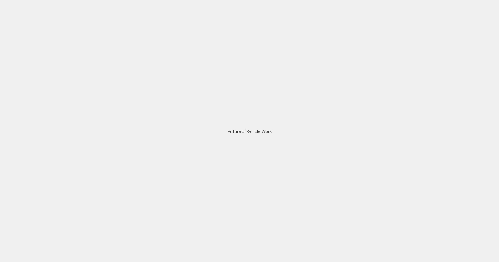

The Future of Remote Work
Published on April 29, 2026

Remote work has become a mainstream reality for millions of people around the world. But what does the future hold for this new way of working? Experts predict that remote work is here to stay, but it will continue to evolve.
We can expect to see a rise in hybrid models, where employees split their time between the office and home. We will also see the development of new technologies that make remote collaboration even more seamless and effective.
The future of remote work is bright. By embracing flexibility and innovation, we can create a work culture that is more productive, more inclusive, and more fulfilling for everyone.
Back to Blog